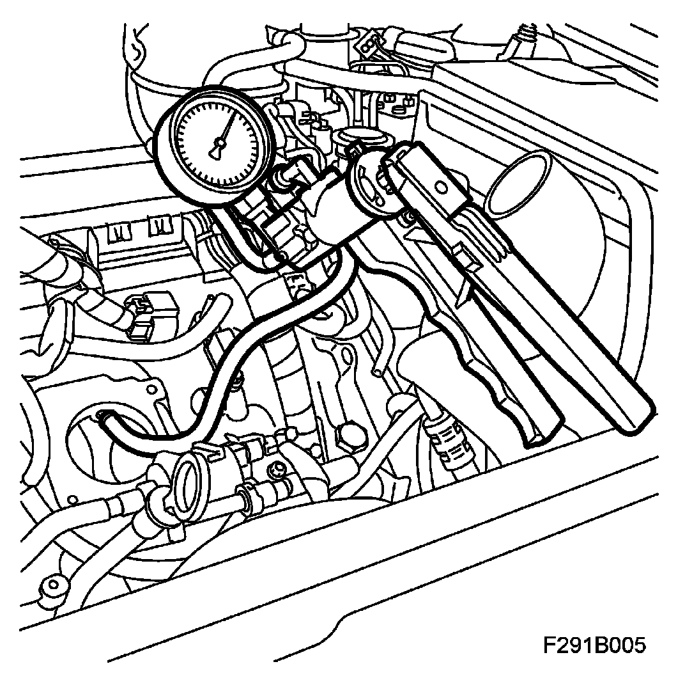
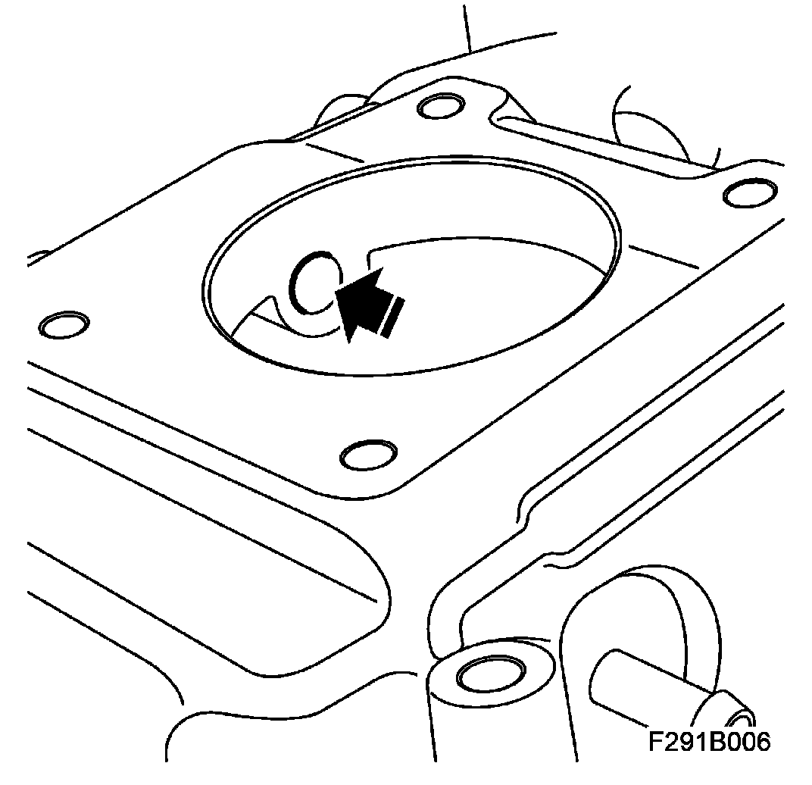
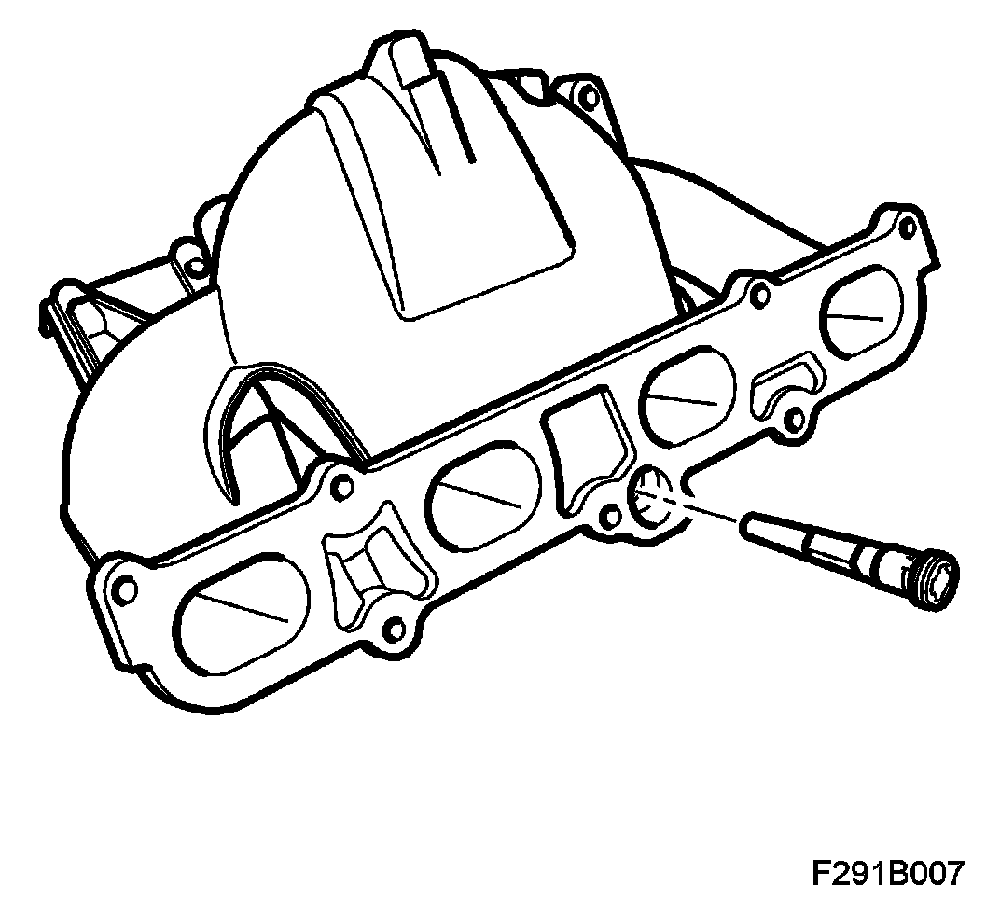

Emission Control Systems: Service and Repair
Check Valve, Crankcase Ventilation, Checking/replacement
1. Remove Throttle body actuator unit (604).
2. Check the function of the check valve using 30 14 883 Pressure/vacuum pump. Connect the pump with a suitable nozzle to the hole for the check valve.

3. Is it possible to pump up a pressure?
Yes: The check valve is in order. Refit the throttle body.
No: The check valve is faulty and must be replaced.
Go to step 4.
4. Remove the intake manifold, intake manifold with SAI.
5. Press out the check valve.

6. Fit a new check valve.

7. Fit the intake manifold, intake manifold with SAI.
8. Fit Throttle body actuator unit (604).